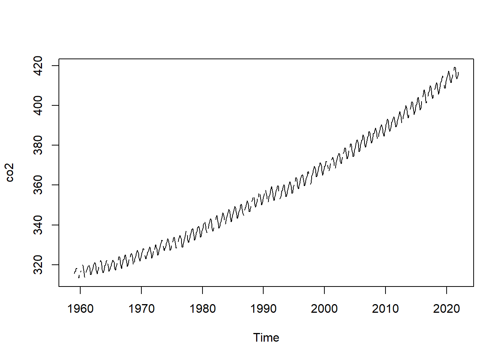
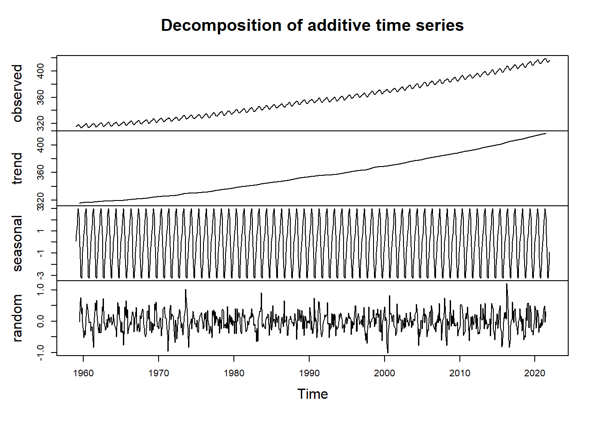

Chapter 5 Capstone Exercise
The final exercise for this course involves performing a time series analysis on real-world data: Carbon Dioxide concentration at the Mauna Loa Observatory, from early 1959 to Present. You’ll go through the process of imputing missing values, testing for stationarity, decomposing the time series, and adjusting for seasonality. The goal for this exercise is a plot showing the seasonal-adjusted time series, which shows the “overall trend” in the data over the last few decades.
5.1 Importing the Data
# The following libraries are included for you
library(tidyverse)
library(zoo)
library(forecast)
library(tseries)
# Sample data from the Mauna Loa Observatory
# https://gml.noaa.gov/webdata/ccgg/trends/co2/co2_mm_mlo.csv
# Data is already pre-processed as a `ts` object. It contains missing values, so
# we'll need to impute those!
co2 <- readRDS("data/missing.Rds")5.2 Visual Checks
- Plot your co2 data and see if the data is stationary, non-stationary (time-dependent), and seasonal or non-seasonal. Use the Augmented Dickey-Fuller test to determine stationarity.
plot.ts(co2)
adf.test(co2)## Error in adf.test(co2): NAs in xLooks like we have some missing values! Let’s try and impute those to fill in the gaps:
- Impute missing values with the
na.approx()function fromzoo:
co2 <- co2 %>%
zoo::na.approx()
adf.test(co2)## Warning in adf.test(co2): p-value greater than printed p-value##
## Augmented Dickey-Fuller Test
##
## data: co2
## Dickey-Fuller = -0.12404, Lag order = 9, p-value = 0.99
## alternative hypothesis: stationaryBased on the statistic and p-value, the data is non-stationary.
5.3 Decomposing the Time Series
We’re interested in the seasonal, remainder, and specifically, trend components. We want to know what the data looks like when adjusted for seasonality. To do this, we need to decompose our time series into its ETS components. Then, we can remove the seasonal component.
- Decompose the time series and plot the resulting
decomposed.tsobject:
co2_decomp <- co2 %>%
decompose()
plot(co2_decomp)
- Then, adjust for seasonality, and plot the results. Label the y-axis as “CO2 Concentration”, and title the plot “Seasonally-adjusted CO2 Concentration”:
co2_decomp %>%
seasadj() %>%
# If we want to include a rolling window, it's really easy to do with
# zoo::rollapplyr()
#rollapplyr(FUN = mean, width = 12) %>%
plot(ylab = "CO2 Concentration", main = "Seasonally-adjusted CO2 Concentration")
Voila! We now have the overall trend, plus remainder component, of CO2 concentrations. By removing the seasonality of data, we can better assess the year-to-year differences in our data, and can reduce the effect of intra- and inter-year cycles present in the data.